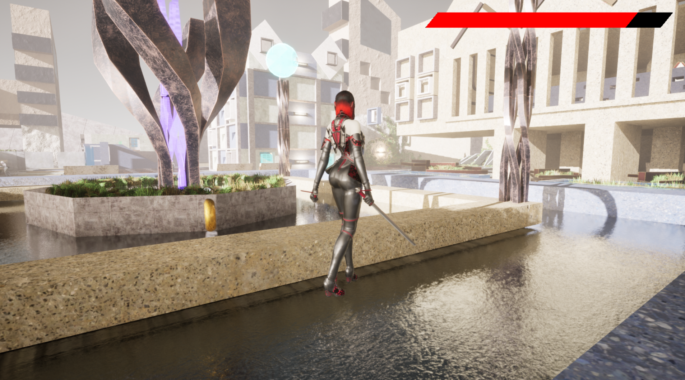
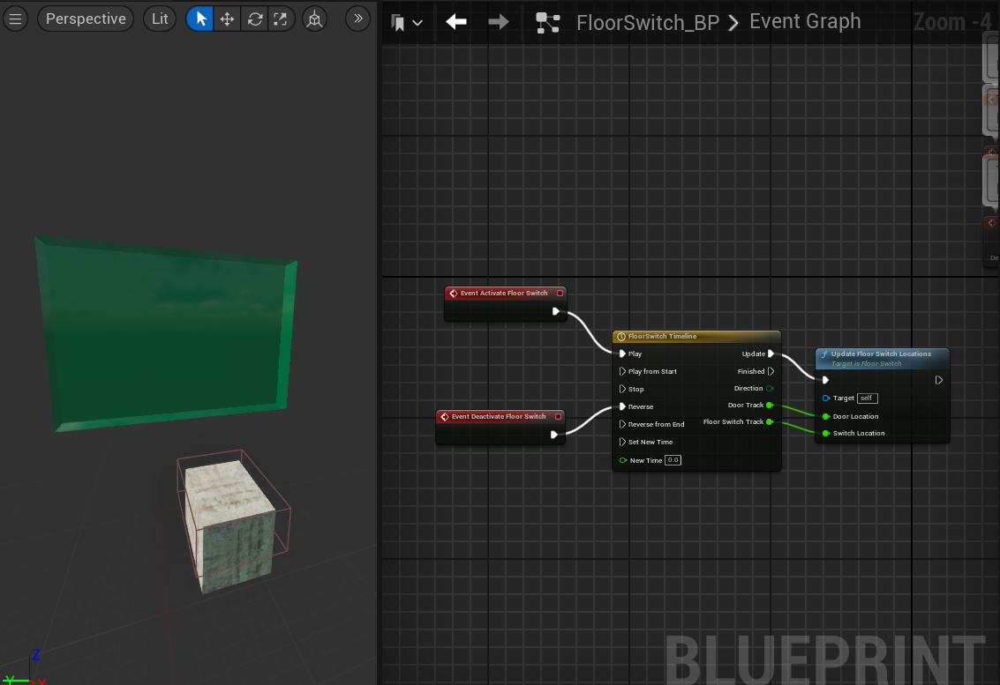
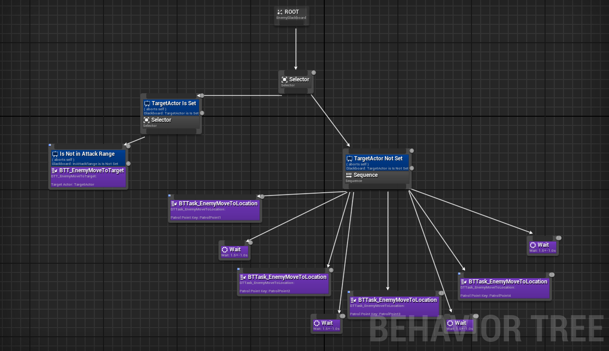
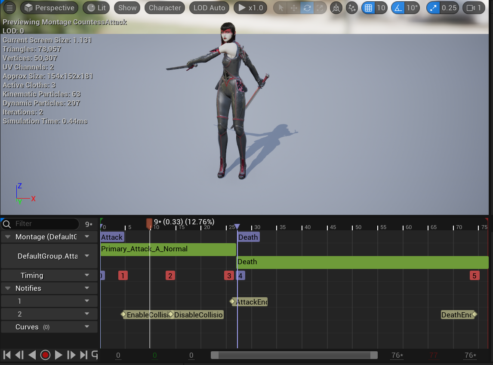

Unity • Combat
Countess Royale
This is my first project completed using Unreal Engine and C++. It gave me an opportunity to experiment and establish a foundation of understanding in the components and tools Unreal offers for its users. In the game, roam around a 3D utopian city, and fight AI-programmed enemy Countesses!

About the Project
This is my first game project I developed using Unreal Engine! Simply roam around a utopian city and battle enemies, avoid hazards, interact with floor switches, and survive your way to the top!
Team: Dylan Abry (Lead Designer and Developer)
Gameplay & Media
"Countess Royale" Gameplay
This clip of gameplay shows the pickup system in the game for health and hazard items, along with the game's combat system. Enemies play a death animation once they have no health and the objects are destroyed afterwards.

Floor Switch Blueprint
This is the blueprint script that was used for the Floor Switch logic.

Enemy Behavior Tree
AI behavior tree that was applied to the enemies in the game. It runs through the logic of them patrolling, moving to the player target, attacking the player, and returning to their patrol points on the map.

Countess Animation Montage
The Animation Montage that was used to hold each animation state for Countess. It includes idle, run, attack and death animations.
What I Built
- Enemies with Human Behavior using NavMesh and AI Behavior Trees: Developed enemy characters that use Unreal Engine's navigation and AI systems to respond dynamically to the player. Enemies detect the player within an aggression range, navigate toward their position using the NavMesh, and transition between movement and combat behaviors based on distance and gameplay state. Navigation logic allows enemies to pursue the player through the environment rather than following predetermined movement paths.
- Door Switch Blueprint: Created a reusable Blueprint interaction that connects a player-activated switch to a corresponding door. Triggering the switch updates the door's state by raising it upwards to initiate its opening behavior, allowing environmental progression to be controlled through gameplay interactions rather than static level scripting.
- Health and Hazard Pickups: Implemented gameplay objects that modify the player's health through collision and overlap events. Health pickups restore health when collected, while hazards apply damage when encountered, integrating both systems with the same underlying player health logic while enforcing valid health boundaries.
- Combat / Health System: Built combat logic for interactions between the player and enemy characters, including damage processing, health tracking, attacks, and death conditions. Character states are updated as damage is received so that reaching zero health correctly transitions a character out of normal combat behavior and into its death sequence.
- Player and Enemy Character Animation Montage: Integrated Unreal Engine Animation Montages with gameplay logic to control idle, running, combat and death animations. Attacks trigger their corresponding animation sequences while character state prevents incompatible actions from executing during critical animations. Enemy death behavior also coordinates animation, AI, and collision state so defeated characters no longer continue attacking or interfering with gameplay.
Technical Challenges
- Coordinating Enemy Detection, Navigation, and Combat States: Enemy behavior required multiple AI states to work together without conflicting with one another. I connected player detection to NavMesh pursuit and combat conditions so an enemy could identify a target, navigate toward it, stop at an appropriate attack distance, and transition into combat. This required carefully controlling when movement and attack logic were allowed to execute so that navigation did not continue fighting against combat behavior.
- Preventing Enemy Actions After Death: Initially, defeating an enemy did not automatically stop every system controlling that character, allowing movement, attacks, or collision behavior to interfere with the death sequence. I introduced death-state checks that prevent additional attacks and AI actions once health reaches zero, stop active movement, play the appropriate death montage, and update collision behavior. Coordinating these systems ensured that death functioned as a complete gameplay state rather than only playing an animation.
- Maintaining AI Navigation Across Complex Level Geometry: Enemy pursuit depended on having valid NavMesh coverage throughout the playable environment. Areas such as changes in elevation and separated navigation surfaces could interrupt available paths and prevent enemies from reaching the player. I adjusted NavMesh coverage and used Unreal's navigation tools, including Nav Link Proxies where necessary, to establish connections between traversable areas and allow AI characters to continue pursuing the player through more complex sections of the level.